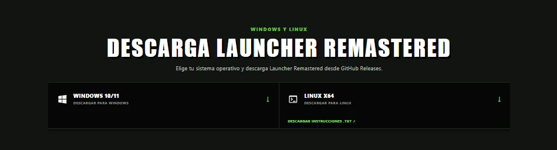
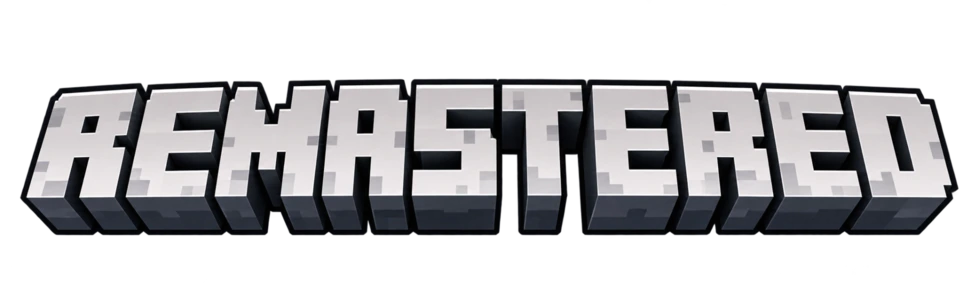
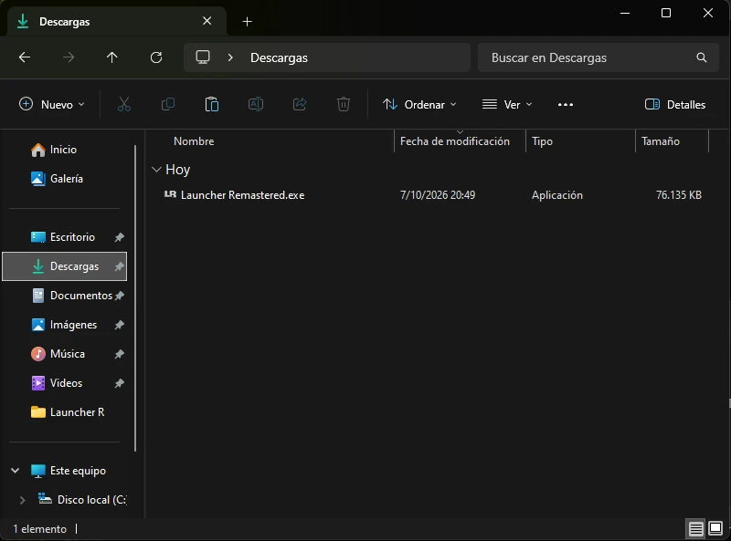
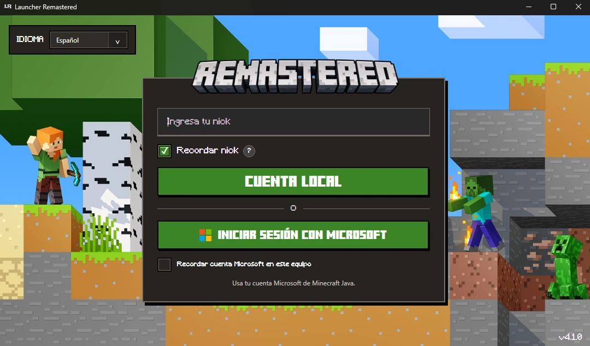
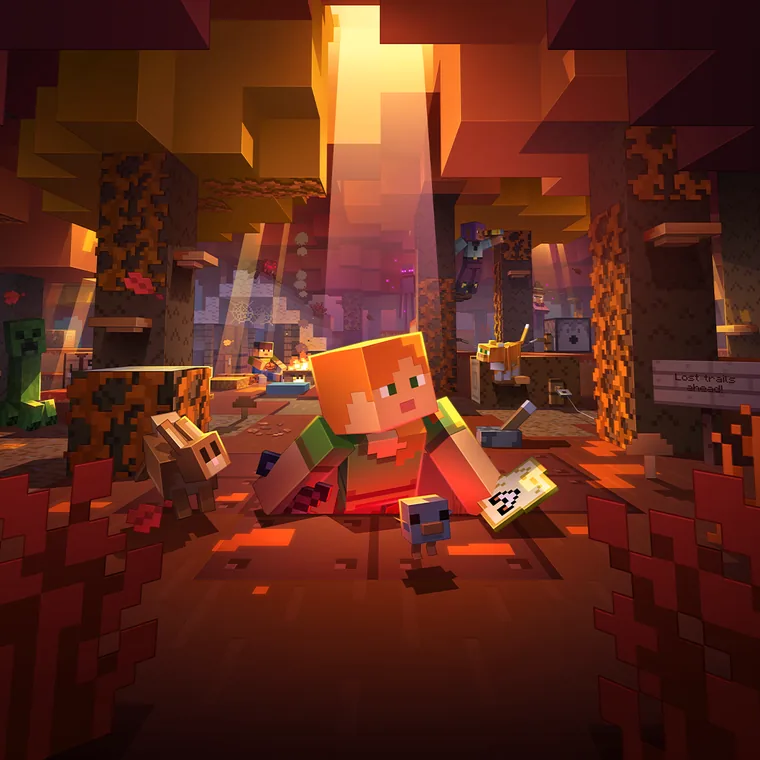
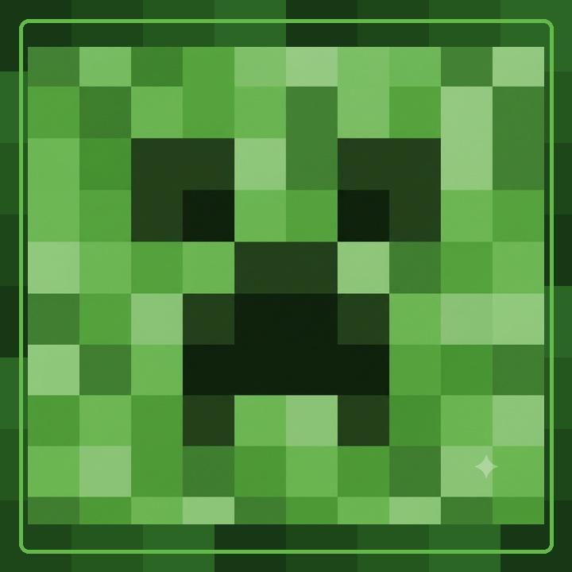
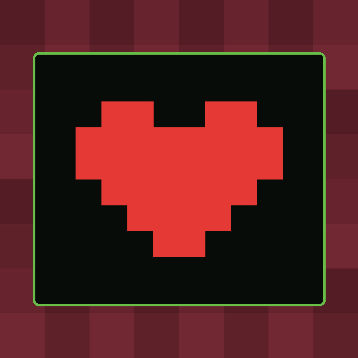

v4.1.0WINDOWS
DESCARGAR
v4.0.0WINDOWS
DESCARGAR
v3.0.0WINDOWS
DESCARGAR

COMPRAR MINECRAFTWINDOWS + LINUX
Versiones, loaders, mods y perfiles en una experiencia clara, rápida y organizada.
PROYECTO INDEPENDIENTE Y NO OFICIAL. No está afiliado, patrocinado ni respaldado por Mojang Studios o Microsoft, y no es el launcher oficial de Minecraft.
DESCARGAR LAUNCHERLISTO PARA EMPEZAR
Descarga, instala y juega. Todo está organizado para que encuentres lo importante sin perder tiempo.



WINDOWS Y LINUX
Elige tu sistema operativo y descarga Launcher Remastered desde GitHub Releases.
Selecciona instalador o ejecutable para Windows.
Compilación estable recomendada para Linux.
INFORMACIÓN
Conoce las novedades, la historia del launcher y las formas de apoyar su desarrollo.

Revisa todo lo añadido, mejorado, solucionado o eliminado.

Descubre el objetivo, las funciones y la identidad del proyecto.

Tu apoyo ayuda a mantener y mejorar Launcher Remastered.
APOYAR EN PAYPALÚLTIMA ACTUALIZACIÓN
La v4.1a es la versión recomendada para Windows. Linux mantiene versiones anteriores disponibles mientras la nueva compilación continúa en preparación.
INFORMACIÓN DEL PROYECTO
Launcher Remastered es un proyecto independiente y no oficial, creado para ofrecer una experiencia cómoda, organizada y visualmente cuidada para Minecraft Java. Integra una interfaz renovada y herramientas para administrar versiones, loaders, mods y perfiles.
No es el launcher oficial de Minecraft y no pretende sustituirlo. Tampoco distribuye, vende ni proporciona Minecraft; su objetivo es facilitar la gestión del juego y fomentar el acceso legítimo mediante los canales oficiales.
La única página oficial del proyecto es launch-mcremaster.netlify.app. La página oficial de Minecraft es minecraft.net.
PROYECTO INDEPENDIENTE Y NO OFICIAL. Launcher Remastered no está afiliado, patrocinado ni respaldado por Mojang Studios o Microsoft. Minecraft y sus marcas pertenecen a sus respectivos titulares.